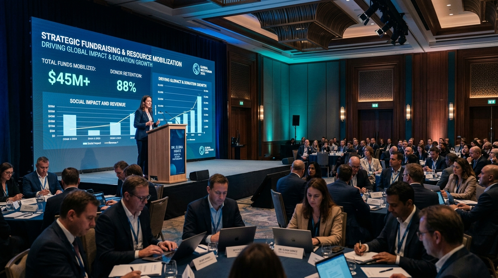
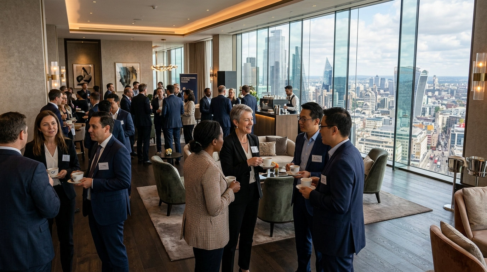
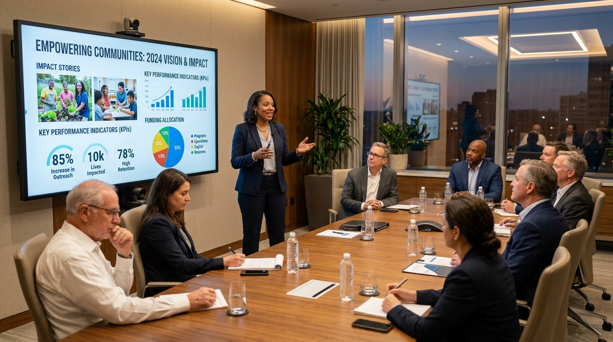
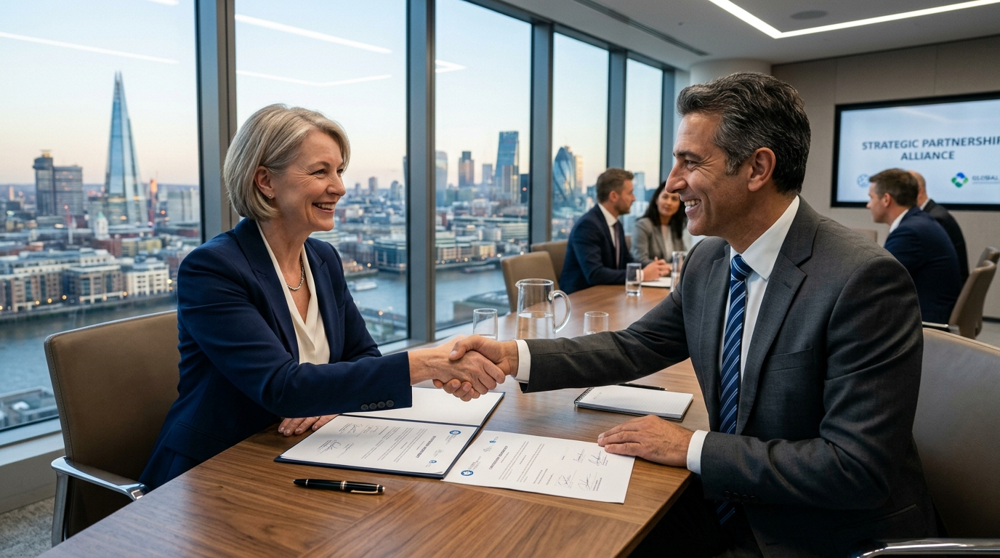

Una jornada intensiva de 7 horas de formación online en vivo para aprender cómo captar donaciones, conseguir aliados estratégicos, estructurar proyectos financiables y diversificar las fuentes sostenibles de financiamiento institucional.

Muchas ONG tienen proyectos extraordinarios, directivos comprometidos y un impacto transformador, pero se enfrentan diariamente al mismo obstáculo: no cuentan con los recursos económicos suficientes para sostener y escalar su misión.
La escasez de donaciones, el desconocimiento de cómo negociar con empresas y la falta de una estrategia sistemática de captación obligan a postergar iniciativas urgentes. Este seminario existe para cambiar radicalmente esa dinámica.
Analizaremos cómo decenas de organizaciones sin fines de lucro estructuraron sus propuestas y movilizaron millones de dólares en recursos.
Convertir necesidades sociales en propuestas de valor irresistibles para financiadores.
Mapear prospectos calificados y conectar con sus intereses estratégicos y filantrópicos.
Dejar de depender de una única fuente y activar un ecosistema multicanal de ingresos.
Involucrar a juntas directivas, líderes de proyectos y equipos de comunicación.
Fundraising no es un acto improvisado, sino un proceso profesional. Descubra los beneficios directos que obtendrá su organización en esta jornada intensiva.
Diseñado para todas las personas que directa o indirectamente participan en la sostenibilidad económica y el crecimiento institucional de una organización.

Este no será un seminario pasivo para escuchar durante horas una exposición teórica. Se trata de una experiencia intensiva, participativa y orientada a la acción inmediata.

Analizaremos casos reales de decenas de ONG: qué hicieron, cómo estructuraron propuestas y cómo movilizaron donaciones millonarias.
Los participantes trabajarán sobre situaciones y proyectos concretos para aplicar las herramientas durante la jornada.
No se enseña solo cómo pedir una donación, sino cómo construir un sistema permanente para generar oportunidades de fondos.
Integra dirección, proyectos sociales, comunicación, finanzas, voluntariado, eventos y fidelización de donantes.
Diseñado paso a paso para pasar de la teoría a la acción inmediata. Siete bloques estructurados con ejercicios aplicados a su propia organización.
Por qué recaudar es tarea de toda la organización, no de una sola persona.
Dónde está el dinero: donantes, empresas, fundaciones y cooperación.
Cómo estructurar un proyecto financiable y construir la relación.

Aprenda qué buscan las empresas al financiar una causa social.
Estrategias en redes para transformar seguidores en donantes recurrentes.
Finalice con una hoja de ruta concreta lista para ejecutar al día siguiente.
"¿Su ONG no tiene dinero para pagar un seminario sobre cómo conseguir dinero?
Tal vez esa sea precisamente la razón por la que necesita estar aquí."
Una organización no puede esperar a tener recursos para comenzar a aprender cómo movilizarlos. La falta de recursos no debe ser el final de la conversación. Puede ser el comienzo de una nueva estrategia.
Hable, chatee e interactúe con el facilitador y sus colegas en tiempo real a través de su computadora o aplicación móvil (Apple y Android).
Capacite a todo su equipo de trabajo con una sola conexión, sin gastos de viaje, hospedaje ni traslados fuera de la oficina.
Reciba el directorio con los contactos de colegas de cursada para generar sinergias y alianzas institucionales posteriores.
UADEN Global es la red internacional de escuelas de negocios que representa y difunde los programas, metodologías y estándares académicos de la Universidad Americana de Negocios de los Estados Unidos (formación continua dependiente de la Cámara de las Empresas Latinas en EE. UU.).
Desde 2010, UADEN ha contribuido a la formación de más de 35.000 graduados en Estados Unidos y América Latina, consolidándose como una de las redes de educación ejecutiva y corporativa de mayor crecimiento para el mercado hispanoamericano.
Emitido por UADEN en los Estados Unidos. Respaldo curricular de valor internacional.
Eventos online en vivo con garantía de soporte técnico y acceso asincrónico disponible.
Envíe hasta 5 preguntas hasta 72 horas antes para que sean abordadas durante la sesión.
Descarga completa de guías, plantillas de trabajo y directorio institucional al finalizar.
Consultores de empresas Fortune 500, autores de libros y mentores de reconocimiento global orientados a resultados.
Invierta en la sostenibilidad a largo plazo de su organización. Aproveche las tarifas bonificadas por reserva anticipada y descuentos por equipo.
Tarifa Early Bird Individual (Ahorro $40 USD vs tarifa regular)
Todo lo que necesita saber para coordinar su participación y la de su equipo directivo sin contratiempos.
Participar es muy fácil. Su asesor educativo de UADEN le orientará con la inscripción que se administra directamente desde USA. Una vez procesado su pago, usted recibirá su Invoice oficial, carta formal de bienvenida y credenciales de acceso a la plataforma.
¡Sí, absolutamente! UADEN ofrece la ventaja exclusiva de asistentes ilimitados a través de una sola conexión. Puede proyectar la conferencia en una sala de reuniones para que participen miembros de la junta directiva, coordinadores de proyectos y colaboradores sin costos adicionales.
Cuenta con garantía de acceso asincrónico. Si por motivos laborales o de agenda no puede estar presente en algún bloque, tendrá la posibilidad de revisar la grabación y el material estructurado del evento. Para la emisión del certificado oficial de asistencia a nombre del ejecutivo titular, se requiere la presencia y verificación de conexión durante el programa.
Cada participante acreditado recibirá un Certificado de Participación emitido por UADEN (Universidad Americana de Negocios de EE. UU.). Los apuntes de clase, diplomas, plantillas y el obsequio "Who is Who" (directorio de contactos de organizaciones colegas) se descargan directamente en formato digital al finalizar la jornada.
Hasta 72 horas antes del seminario, usted puede enviar hasta 5 preguntas específicas sobre los retos que enfrenta su ONG. El equipo académico y los ponentes integrarán las respuestas y casos aplicados directamente durante las exposiciones del diplomado.
Solo requiere una conexión a Internet de banda ancha en cualquier dispositivo (computadora de escritorio, laptop, tablet o teléfono inteligente Apple/Android), sin restricciones para video ni navegación web, y bocinas/parlantes con micrófono habilitado. Además, 72 horas antes del evento le contactaremos para entrenar y validar su acceso a la plataforma.
No espere a que llegue el donante. Aprenda a buscarlo con metodología profesional, casos reales y visión estratégica internacional. Dé el siguiente paso y fortalezca de forma decisiva el impacto de su organización.